Authors: Tudor D. Stanescu, Sumanta Tewari
Type: theory · Category: quantum information and computing · PDF: https://arxiv.org/pdf/2610.07169v1
Analysis basis: full PDF text, analyzed in chunks
Topic relevance: analog quantum simulation 2/5 · Keldysh / 2PI / non-Gaussian methods 1/5
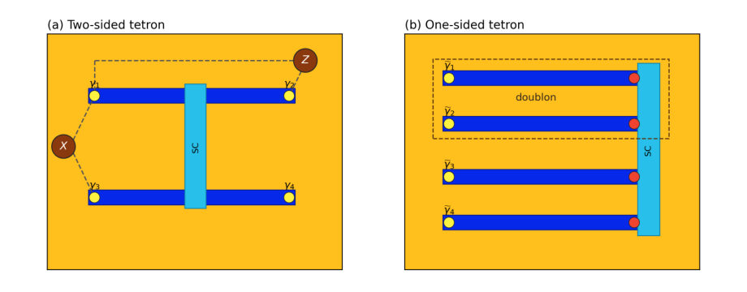
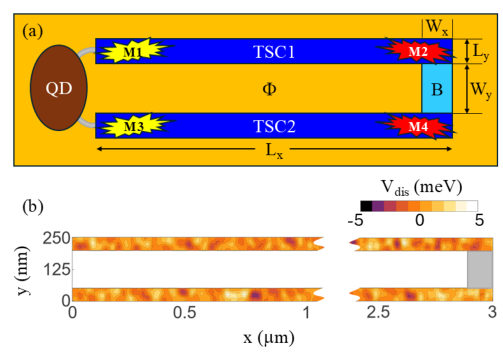
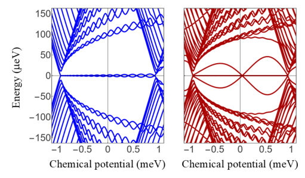
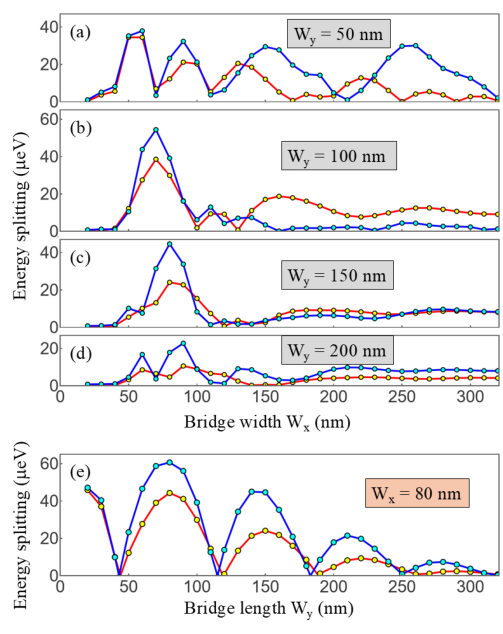
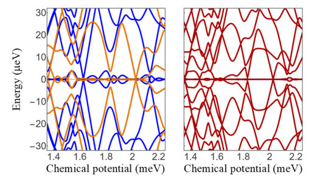
Summary. This paper proposes a novel 'one-sided tetron' architecture to improve Majorana-based topological qubits by mitigating detrimental wave-function overlap between end modes. By analyzing a simplified 'doublon' subsystem, the authors show that this geometry suppresses the energy splitting of the surviving Majorana pair by several orders of magnitude compared to existing designs. This enhancement dramatically increases the qubit's parity lifetime, moving closer to practical quantum computation.
Why it may be interesting. The work directly addresses the coherence and lifetime limitations of topological qubits, which is central to quantum information science. The mechanism of suppressing overlap through geometry is highly relevant for designing robust quantum hardware.
Main problem. Residual wave-function overlap between end modes in finite-length Majorana systems limits the parity lifetime and coherence of qubits, hindering reliable quantum computation.
Main result. The proposed one-sided tetron geometry significantly suppresses Majorana overlap compared to two-sided tetrons, dramatically increasing the parity lifetime by orders of magnitude.
Method. Theoretical modeling using effective low-energy Hamiltonians and analyzing hybridization mechanisms in simplified subsystems (doublons).
Model / system. The system involves topological qubits realized using Majorana Zero Modes (MZMs) in semiconductor-superconductor (SM-SC) hybrid nanowires. The comparison is between two-sided and the proposed one-sided tetron structures.
Key observables. Parity lifetimes ($ au_X, au_Z$), Majorana splitting energy ($E_{ij}$), and the hybridization energy ($\delta$).
Important parameters / regimes. The degree of Majorana overlap, the size of the superconducting bridge, and the resulting energy splitting ($\delta$).
Assumptions / limitations. The analysis relies on the assumption that the one-sided tetron geometry can effectively decouple the end modes, mimicking the effect of doubling the wire length.
Figures summary. Figure 1 schematically compares the two-sided tetron and the proposed one-sided tetron, with a specific focus on the 'doublon' subsystem analysis.
Paper structure. The paper first identifies the limitation of two-sided tetrons due to overlap, then proposes the one-sided tetron. It analyzes the basic hybridization mechanism using a doublon model, demonstrating the dramatic improvement in parity lifetime, and concludes by comparing the suppression efficiency to existing designs.
One-dimensional SM-SC hybrid nanowires with Rashba spin-orbit coupling and applied Zeeman field can support Majorana zero modes (MZMs) at the ends of the wire. In finite-length systems, residual wave-function overlap between the end modes produces an energy splitting. In a two-sided tetron qubit, composed of a pair of parallel Majorana wires coupled by a trivial SC backbone in the middle, this splitting limits the parity lifetime associated with Majorana pairs involving both wires and the coherence of the qubit, adversely affecting measurement-based braiding and readout operations. Here, we propose a one-sided tetron made of four parallel Majorana wires connected at a common end by an SC backbone. In the topological phase, the free wire ends host four MZMs that define the topological qubit, while the Majoranas localized near the opposite ends hybridize through the backbone and acquire finite energy. To study the basic hybridization mechanism, we consider a simpler two-wire subsystem, i.e., half of a one-sided tetron, which we call a doublon. In a doublon, the backbone, or bridge, strongly hybridizes the two Majorana modes at the connected end and shifts them away from zero energy, while the modes at the free ends form a near-zero energy fermion. We show that the splitting of the surviving MZM pair can fall by about two orders of magnitude compared to the splitting energies in a two-sided tetron, thereby dramatically increasing the parity lifetimes. Thus, the one-sided tetron ensures a suppression of the Majorana overlap comparable to doubling the length of the corresponding two-sided tetron.
Authors: Peize Ding, Andrew J. Millis, Yongxin Zeng
Type: theory · Category: strongly correlated electrons · PDF: https://arxiv.org/pdf/2610.07174v1
Analysis basis: full PDF text, analyzed in chunks
Topic relevance: analog quantum simulation 2/5
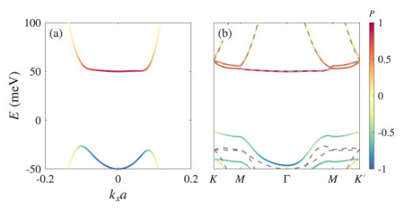
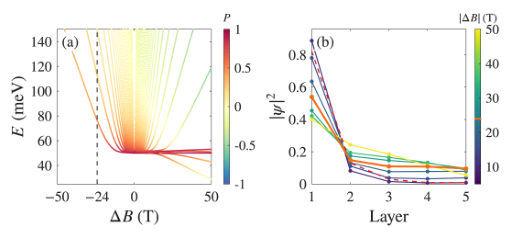
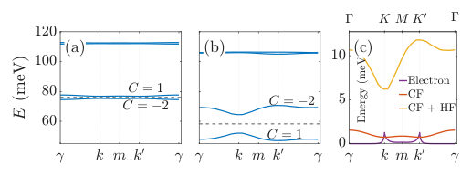
Summary. This work develops a Composite Fermion theory to explain Fractional Chern Insulators in rhombohedral graphene. By incorporating moiré modulation and Coulomb interactions via a mean-field approach, the authors show how these effects stabilize the FCI ground state. The theory predicts quantized Hall responses characteristic of these topological phases.
Why it may be interesting. The theoretical framework of CFs and the explicit inclusion of moiré potentials to stabilize topological phases are highly relevant to understanding strongly correlated electron systems in engineered 2D materials.
Main problem. The paper investigates the nature of Fractional Chern Insulator (FCI) states in rhombohedral graphene (RLG) and how the moiré potential and Coulomb interactions stabilize these exotic quantum states.
Main result. The composite fermion (CF) theory successfully describes the FCI ground state, predicting fractionally quantized Hall responses when the system is at Jain sequence filling fractions.
Method. The primary theoretical tool is the Composite Fermion (CF) theory, utilizing a flux-attachment transformation and subsequent mean-field (Hartree-Fock) approximation to treat electron-electron interactions.
Model / system. The system is rhombohedral graphene multilayers (RLG) subjected to moiré modulation and electron-electron Coulomb interactions. The Hamiltonian is analyzed using a continuum model framework adapted for the moiré superlattice.
Key observables. Fractionally quantized Hall conductance ($\sigma_{xy}$), the CF energy spectrum (Landau Levels split by moiré potential), and the Chern number ($C$).
Important parameters / regimes. Moiré filling fractions (Jain sequence, e.g., $ u=1/3$), the attached magnetic flux quanta ($2s$), and the moiré potential strength ($\phi$).
Assumptions / limitations. The analysis relies on the CF mean-field approximation, treating the moiré potential phenomenologically, and assuming spin/valley polarization for simplification.
Figures summary. Figures illustrate the CF theory progression: flux attachment leading to LLs split by the moiré potential into sub-bands (Jain sequence example). Other figures show band structures, layer polarization, and density distributions under different interaction regimes.
Paper structure. The paper develops the CF framework, applies mean-field theory to incorporate moiré and interaction effects, calculates the resulting topological invariants (Chern numbers), and predicts the incompressible ground state characteristic of FCIs.
The experimental observation of the fractional quantum anomalous Hall effect in rhombohedral graphene multilayers has raised questions about the nature of the fractional Chern insulator (FCI) states and the role of the moiré potential. In this Letter we develop a composite fermion (CF) description and discuss how moiré modulation and Coulomb interactions stabilize the FCI ground states. Under a flux-attachment transformation and mean-field approximation, the CF spectrum forms Landau levels that are further split by the moiré potential. At moiré filling fractions in the Jain sequence, an integer number of CF bands are occupied, resulting in an incompressible ground state with fractionally quantized Hall response. Remarkably, when the attached flux opposes the Berry curvature of the conduction band of rhombohedral graphene, the CF Landau levels are widely spaced in energy and delocalized across layers, leading to a reduced density of states that helps protect the CF mean-field state and amplifying effects of the moiré potential acting on the layer away from the doped electrons. Interactions between CFs further enlarge the moiré-induced band gap and stabilize the FCI ground state. Our work sheds light on the nature of the FCI states in rhombohedral graphene and provides a new theoretical framework for further studies.
Authors: Bristi Ghosh, Vivek Pandey, Malay Bandyopadhyay, Pankaj Bhalla, Snehasish Nandy
Type: theory · Category: other · PDF: https://arxiv.org/pdf/2610.08767v1
Analysis basis: full PDF text, analyzed in chunks
Topic relevance: Keldysh / 2PI / non-Gaussian methods 2/5
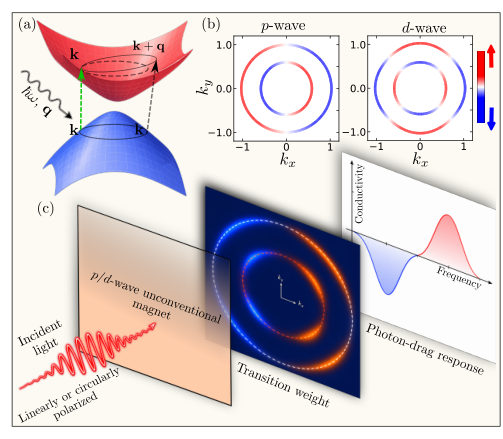
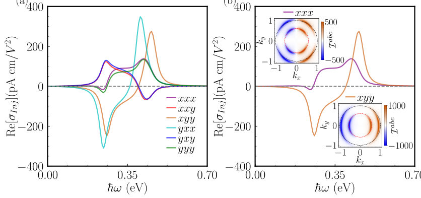
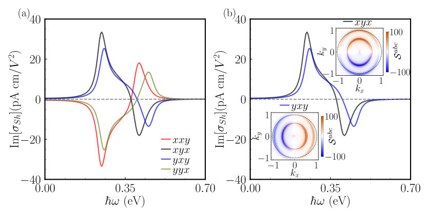
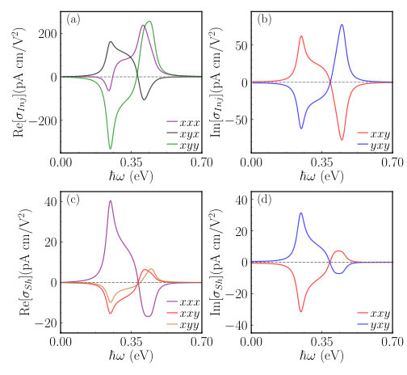
Summary. This theoretical work explores the geometric photon-drag effect in unconventional magnets, using the density-matrix formalism. It demonstrates that the nonlinear dc photocurrent is purely photon-drag driven, vanishing in the conventional limit. The study highlights that the specific symmetry of the magnetic order (e.g., $d$-wave vs. $p$-wave) dictates the complexity and components of the measurable nonlinear response.
Why it may be interesting. The strong dependence on symmetry and quantum geometry makes this relevant for understanding how magnetic order dictates nonlinear optical responses, which is a key area in advanced condensed matter theory.
Main problem. The paper investigates the geometric photon-drag effect, a nonlinear optical phenomenon where finite photon momentum generates a dc photocurrent in unconventional magnets.
Main result. The nonlinear dc photocurrent is found to be entirely photon-drag driven, and the response is highly sensitive to the magnetic symmetry, distinguishing between $p$-wave and $d$-wave altermagnets.
Method. The analysis uses the density-matrix formalism in the velocity gauge, deriving nonlinear injection and shift conductivities through perturbative expansion.
Model / system. The study focuses on unconventional $p_x$-wave and $d_{x^2-y^2}$-wave magnets, modeled using a low-energy $k \cdot p$ Hamiltonian incorporating Rashba spin-orbit coupling (RSOC).
Key observables. Nonlinear injection and shift conductivities ($\sigma_{abc}$), and the resulting dc photocurrent.
Important parameters / regimes. Finite photon momentum ($\hbar \mathbf{q}$), Rashba SOC strength ($\lambda$), and the symmetry type of the magnetic order ($p$-wave vs. $d$-wave).
Assumptions / limitations. The analysis assumes a perturbative expansion in the vector potential and focuses on interband nonlinear optical responses, neglecting quadrupole corrections.
Figures summary. Figures illustrate the origin of the current from nonvertical optical transitions, show the Fermi surface for $p$- and $d$-wave altermagnets, and depict the frequency dependence of various conductivity components.
Paper structure. The paper builds from the general formalism of the photon-drag effect to specific calculations for $p$-wave and $d$-wave magnets, culminating in a comparison of their symmetry-dictated nonlinear responses.
The photon-drag effect is a nonlinear optical phenomenon in which the finite momentum carried by incident photons is transferred to charge carriers, thereby generating a dc photocurrent even in systems with inversion symmetry. Within the density-matrix formalism in the velocity gauge, and accounting for nonvertical optical transitions driven by finite photon momentum, we derive the nonlinear injection and shift conductivities that characterize the photon-drag photogalvanic response. We investigate these photon-drag responses in unconventional $p_x$-wave and $d_{x^2-y^2}$-wave magnets in the presence of Rashba spin-orbit coupling (RSOC), highlighting the distinct roles of symmetry and quantum geometry in shaping their nonlinear optical behavior. The key finding of our work is that, despite the broken inversion symmetry, the conventional photogalvanic response vanishes identically in the $q=0$ limit after Brillouin-zone integration in both unconventional magnetic phases, resulting in a nonlinear dc photocurrent entirely photon-drag driven. The two unconventional magnets exhibit qualitatively distinct responses governed by their symmetry properties: the $p$-wave magnet supports only linear injection and circular shift conductivities, whereas the $d$-wave altermagnet, which simultaneously breaks time-reversal and inversion symmetries, admits all linear and circular components. Our findings establish altermagnets as a promising platform for controlling symmetry-selective nonlinear photocurrents and may enable applications in polarization-sensitive photodetection, nonlinear optoelectronics, and quantum geometric photogalvanics.
Authors: Leonardo A. Navarro-Labastida, Gerardo G. Naumis
Type: theory · Category: strongly correlated electrons · PDF: https://arxiv.org/pdf/2610.07734v1
Analysis basis: full PDF text, analyzed in chunks
Topic relevance: analog quantum simulation 2/5
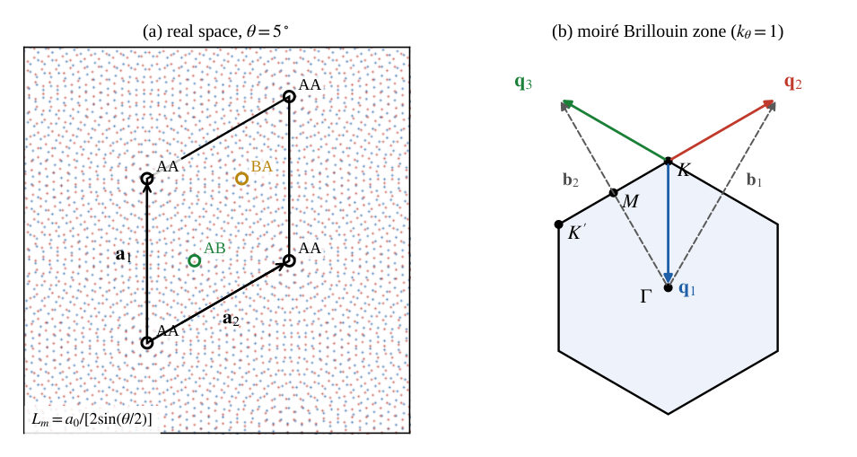
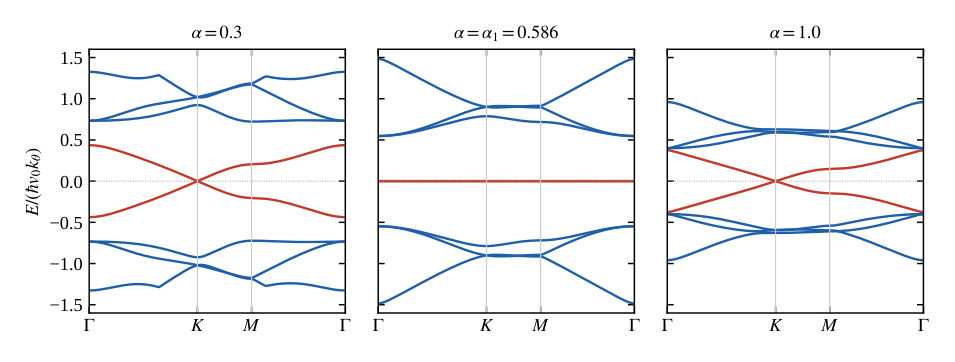
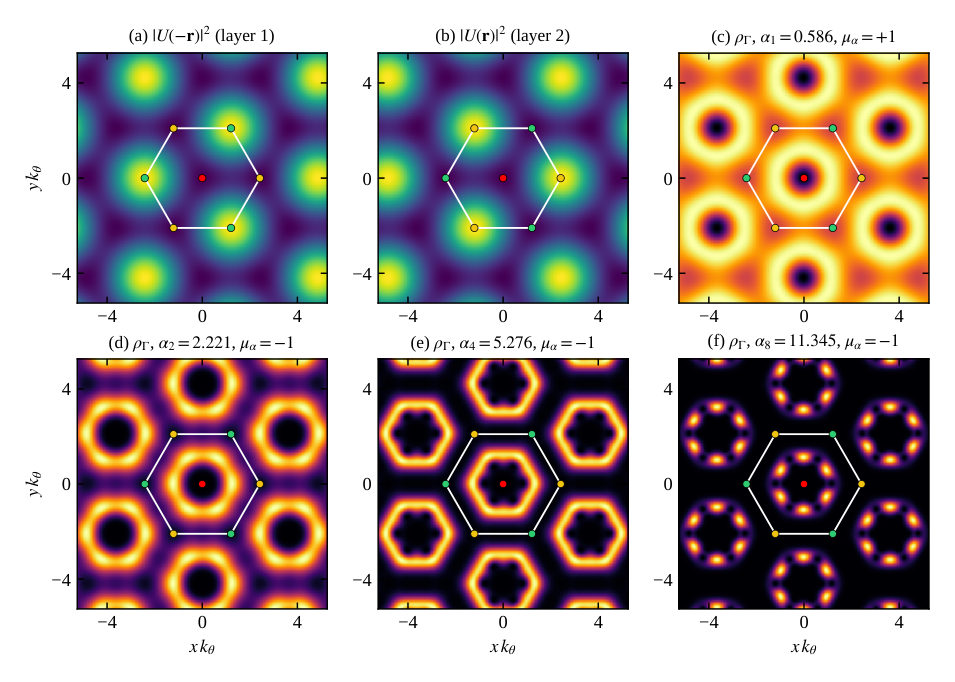
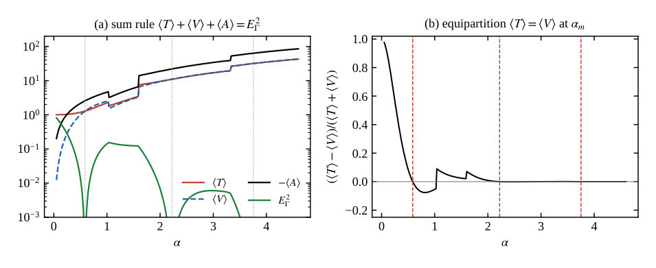
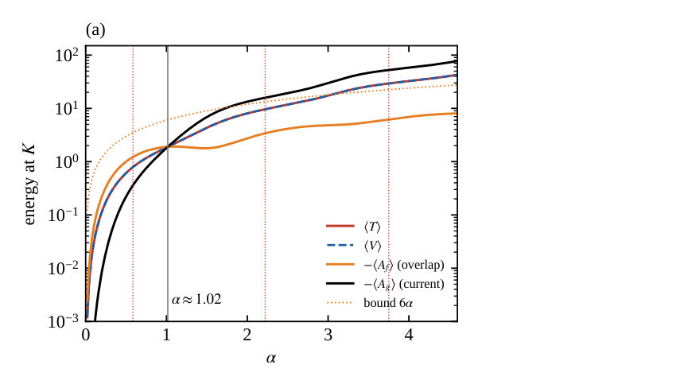
Summary. This theoretical work develops a unified theory for the magic angles in twisted bilayer graphene, explaining the formation of perfectly flat bands using a chiral continuum model. The key finding is that the non-Abelian nature of the interlayer coupling is essential, leading to a divergence in the ratio of Coulomb to kinetic energy, which signals the onset of strongly correlated electronic phases.
Why it may be interesting. The deep connection between the underlying non-Abelian gauge structure and the emergence of topological flat bands provides a rich theoretical framework applicable to other moiré heterostructures or systems exhibiting strong geometric coupling.
Main problem. The paper investigates the origin of perfectly flat electronic bands at specific 'magic' twist angles in twisted bilayer graphene (TBG). It aims to provide a unified theoretical understanding of this phenomenon.
Main result. The flat bands arise due to the non-Abelian structure of the interlayer coupling, leading to a divergence in the ratio of Coulomb energy to bandwidth ($U_C/W$), which is the prerequisite for correlated electronic phases.
Method. The theory employs the chiral continuum model, analyzing the square of the chiral Hamiltonian to derive energy sum rules and study the zero-mode problem using concepts from non-Abelian gauge fields.
Model / system. The system is Twisted Bilayer Graphene (TBG) described by the Bistritzer–MacDonald Hamiltonian. The analysis focuses on the effective Hamiltonian derived from squaring the chiral Hamiltonian, which incorporates non-Abelian $SU(2)$ pseudo-magnetic fields.
Key observables. Flat band energy ($E=0$), Chern numbers ($C=\pm2$), quantum metric, and the ratio $U_C/W$.
Important parameters / regimes. Magic angles ($\alpha_m$), the dimensionless coupling parameter ($\alpha$), and the asymptotic spacing $\alpha_{m+1} - \alpha_m o 3/2$.
Assumptions / limitations. The analysis often relies on the chiral limit ($w_{AA}=0$) and treats the problem using asymptotic approximations (e.g., oscillator picture for large $\alpha$).
Figures summary. Figures illustrate the geometry of TBG and the band structure along the Moiré Brillouin zone ($\Gamma–K–M–\Gamma$) at various coupling strengths relative to the magic angles.
Paper structure. The paper builds from the general continuum model to derive an energy sum rule, analyzes the role of the non-Abelian structure, and finally examines the zero-mode problem in the asymptotic limit to confirm the physical mechanism for flat bands.
At a discrete set of ``magic'' twist angles, twisted bilayer graphene develops two bands at charge neutrality that are almost perfectly flat. We present a unified theory of this phenomenon within the chiral continuum model. The central object is the square of the chiral Hamiltonian, a $2\times2$ Schrödinger operator for an electron moving in a non-Abelian $SU(2)$ pseudo-magnetic field generated by the interlayer tunneling. From it we derive an energy sum rule in which the interlayer coupling splits into a bounded overlap channel and an unbounded current channel; their different scaling with the coupling $α$ explains why the first magic angle is qualitatively different from the rest. The asymptotic rule $α_{m+1}-α_m\to3/2$ follows from a rescaling of the moiré potential together with its three-cell magnetic periodicity, with the two parity families of zero modes each repeating with period $3$ and interleaved with each other. Near the AA point the zero-mode problem becomes a lowest-Landau-level problem in an effective field $B_{\rm eff}=3α$, so that the high-order zero modes are coherent Landau states of width $1/\sqrt{3α}$ whose guiding centres converge to $\pm(π/3) q_μ$, with kinetic and confinement energies in equipartition. Deforming the coupling into an Abelian one removes the magic-angle sequence, which shows that the non-Abelian structure is essential. Between consecutive magic angles, band inversions at $Γ$ and $M$ produce phases with Chern numbers $C=\pm2$, and the quantum metric reaches a sharp maximum at $θ\approx0.43^\circ$, identifying a promising regime for correlated and topological phases beyond the first magic angle.
Authors: J. Czarnecki, A. Sierant, B. Szafran, P. Szumniak, T. S. Jespersen, G. Meucci, T. Jansen, R. Citro, A. Maiellaro, N. Bergeal, M. Bibes, M. Saluzzo, A. Kalaboukhov, P. Wójcik
Type: theory · Category: strongly correlated electrons · PDF: https://arxiv.org/pdf/2610.07878v1
Analysis basis: full PDF text, analyzed in chunks
Topic relevance: Keldysh / 2PI / non-Gaussian methods 1/5 · analog quantum simulation 1/5
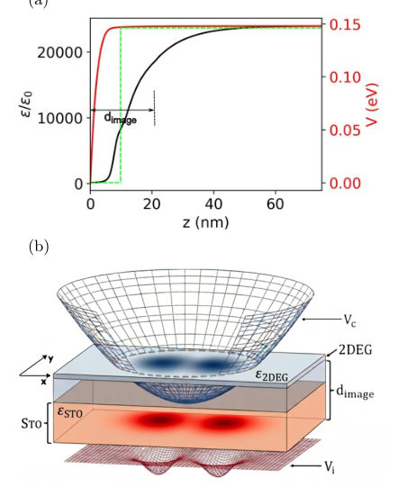
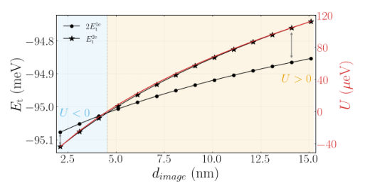
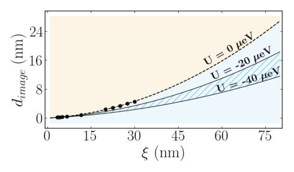
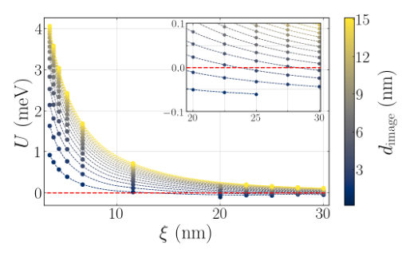
Summary. This theoretical work develops a mechanism showing that the polarization of the SrTiO3 substrate induces an image charge that counteracts direct Coulomb repulsion in LaAlO3/SrTiO3 quantum dots. By using a self-consistent calculation, the authors demonstrate that this image-charge effect leads to a negative charging energy, suggesting a controllable route for electron pairing in oxide materials.
Why it may be interesting. The mechanism provides an explicit, purely electrostatic pathway to induce electron pairing (negative U), which is a key concept in understanding unconventional superconductivity and correlated electron behavior in oxide heterostructures.
Main problem. The paper proposes a microscopic mechanism to explain the observation of negative charging energy (U < 0) in LaAlO3/SrTiO3 quantum dots.
Main result. The negative charging energy arises from the electrostatic image charge induced by the paraelectric response of the SrTiO3 substrate, establishing a controllable route for electron pairing in oxide quantum dots.
Method. A self-consistent configuration-interaction approach is employed to solve the two-electron Hamiltonian, incorporating both direct Coulomb repulsion and the image-charge interaction.
Model / system. The system is the LaAlO3/SrTiO3 interface forming a 2DEG in quantum dots. The model includes kinetic, spin-orbit, and image-charge potentials, solved iteratively.
Key observables. Negative charging energy (U < 0), which signifies that the energy of two electrons is lower than twice the energy of a single electron.
Important parameters / regimes. The strength of the pairing is tunable by the confinement potential and the effective image-charge distance set by the interfacial thickness.
Assumptions / limitations. The dielectric permittivity of STO is modeled using a field-dependent relation, and the image charge is approximated using a step-like function.
Figures summary. Figure 1 illustrates the self-consistent potential and permittivity profile, while Figure 2 compares the total energy of a two-electron QD versus two separate single-electron QDs to show the negative-U regime.
Paper structure. The paper establishes the physical problem, develops a Hamiltonian including image-charge terms, solves the two-electron problem self-consistently, and maps out the parameter space showing the conditions for negative charging energy.
We propose a microscopic mechanism for the negative charging energy in LaAlO$_3$/SrTiO$_3$ quantum dots, arising from the electrostatic image charge associated with the paraelectric response of SrTiO$_3$. Using a self-consistent configuration-interaction approach that accounts for both Coulomb repulsion and image-charge interactions, we find a robust regime of electron pairing whose strength is tunable through the confinement potential and the effective image-charge distance, set by the thickness of the interfacial two-dimensional electron gas. Our results establish dielectric image-charge effects as a route to controllable electron pairing in oxide quantum dots and other materials with a strong dielectric response.
Authors: Benjamin Fuller, Haowei Fan, Agustin Montemurro, Yuyuan Pan, Alexey I. Berdyugin, Vladimir I. Falko, Xiao Li
Type: theory · Category: other · PDF: https://arxiv.org/pdf/2610.08505v1
Analysis basis: full PDF text, analyzed in chunks
Topic relevance: Keldysh / 2PI / non-Gaussian methods 1/5 · analog quantum simulation 1/5
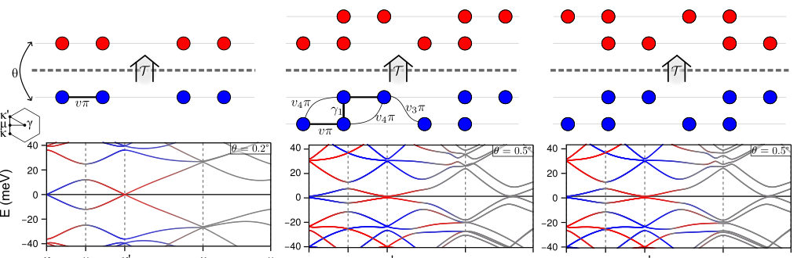
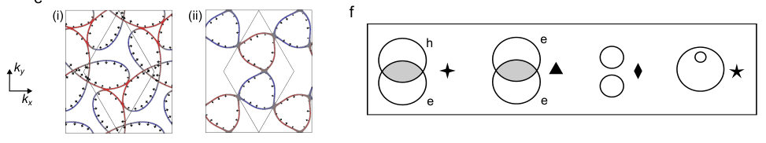
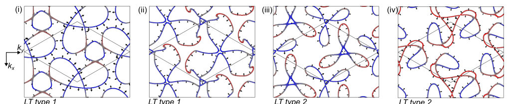
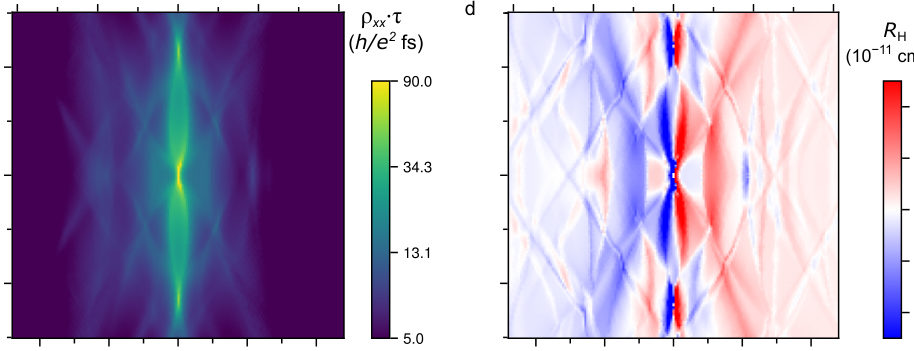
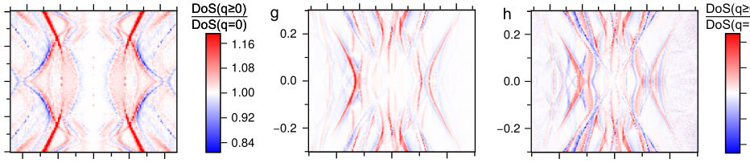
Summary. This work theoretically models quantum transport in twisted graphene multilayers separated by hBN spacers. By analyzing moiré superlattice effects and interlayer hybridization, the authors predict the formation of minibands and the emergence of persistent $1/B$-periodic quantum oscillations in resistivity. This provides a detailed framework for understanding tunable quantum electronic properties in van der Waals heterostructures.
Why it may be interesting. The detailed modeling of moiré superlattices and the prediction of high-temperature quantum oscillations in weakly coupled 2D materials are highly relevant to understanding emergent quantum phenomena in engineered quantum systems.
Main problem. The study investigates the spectral features and quantum transport effects in small-angle twisted graphene multilayers separated by a hexagonal boron nitride (hBN) spacer.
Main result. The system exhibits minibands, hosts Lifshitz transitions, and predicts $1/B$-periodic quantum oscillations in resistivity due to semiclassical magneto-oscillations of interlayer hybridization.
Method. The analysis employs a hybrid k.p-theory–tight-binding (HkpTB) approach, utilizing self-consistent Hartree mean-field calculations.
Model / system. The physical system is MLG/hBN/MLG or BLG/hBN/BLG, modeled using Hamiltonians that account for moiré interlayer tunneling, which is significantly weaker than direct contact.
Key observables. Density of States (DoS), miniband edges, van Hove singularities, interlayer hybridization ($\Pi$), and magnetotransport oscillations (Brown-Zak oscillations, $1/B$-periodic oscillations).
Important parameters / regimes. Twist angles ($ heta = 0.2^\circ, 0.5^\circ$), out-of-plane displacement field, and magnetic field ($B$).
Assumptions / limitations. The spacer is assumed to be a monolayer hBN, and the analysis often compares results with and without in-plane periodic charge distribution.
Figures summary. Figures illustrate microscopic structures and exemplary dispersions for the different graphene/hBN/graphene systems, and show DoS maps and magnetotransport results.
Paper structure. The paper progresses from defining the Hamiltonian for different bilayer configurations (MLG/hBN/MLG, BLG/hBN/BLG) to performing self-consistent calculations, analyzing key transport diagnostics like hybridization and magnetotransport, and finally discussing the physical implications of these findings.
Based on the analysis of moiré superlattice characteristics and interlayer hybridisation in small-angle twisted graphene multilayers with a monolayer hexagonal boron nitride (hBN) spacer, we predict spectral features and quantum transport effects in these systems. Here, we consider both a twisted bilayer and double bilayers with a spacer, discuss double bilayers in two stacking orders - with and without inversion symmetry - and also compare the results obtained with self-consistent Hartree calculations with and without in-plane periodic charge distribution, offering computationally efficient models for these graphene/hBN/graphene moiré systems. We note parametric intervals where the appearance of minibands can be enhanced by tuning with an out-of-plane displacement field, and identify the miniband edges and van Hove singularities across a broad range of densities and displacement fields. These system host Lifshitz transitions at which the Fermi lines form a network across moiré Brillouin zones, and to which Brown-Zak oscillations converge at low magnetic field and elevated temperatures. We analyse interlayer hybridisation across the same parameter space, discuss how hybridisation affects in-plane magneto-transport in ultra-high-mobility structures, and predict that semiclassical magneto-oscillations of interlayer hybridisation can lead to 1/B-periodic quantum oscillations of resistivity persistent to high temperature.
Authors: Himanshu Mavani, Zhonglin He, Evgeny Y. Tsymbal
Type: both · Category: strongly correlated electrons · PDF: https://arxiv.org/pdf/2610.07494v1
Analysis basis: full PDF text, analyzed in chunks
Topic relevance: Keldysh / 2PI / non-Gaussian methods 1/5
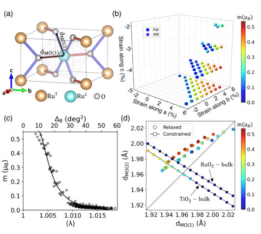
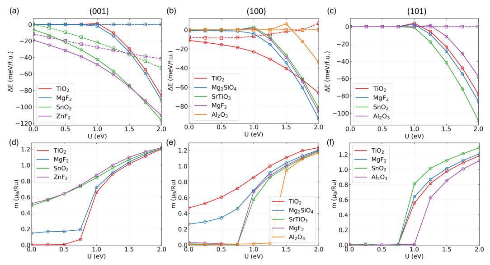
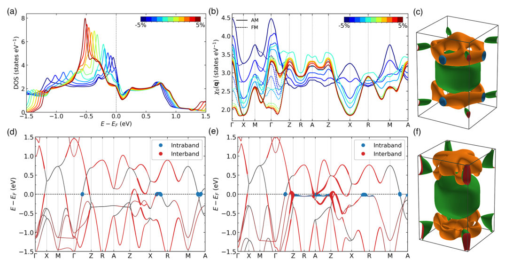
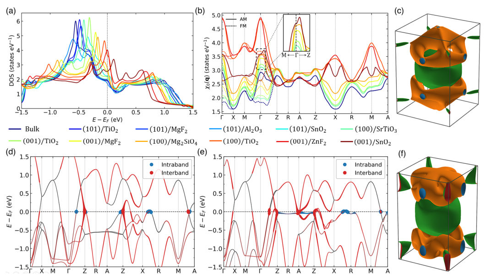
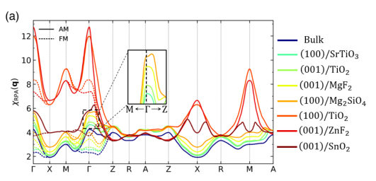
Summary. This work addresses the long-standing debate about the magnetic state of $ ext{RuO}_2$ by combining advanced theory and experimental review. It concludes that epitaxial strain is the primary driver for achieving altermagnetism in $ ext{RuO}_2$ films, providing concrete material design rules for realizing this quantum state.
Why it may be interesting. The detailed theoretical modeling of magnetic ordering in transition metal oxides, particularly the focus on strain and correlation effects, provides a rich playground for understanding emergent quantum magnetism.
Main problem. The central question is determining the structural and chemical conditions under which the rutile material $ ext{RuO}_2$ can exhibit altermagnetism, given conflicting experimental evidence regarding its magnetic ground state.
Main result. The study identifies substrate-imposed epitaxial strain as the leading factor favoring altermagnetism, while doping and substitution can modify this strain-induced magnetic state in predictable ways.
Method. The research combines a critical review of numerous experimental techniques (e.g., ARPES, $\mu ext{SR}$, XMLD) with extensive first-principles calculations (DFT, DFT+U, RPA) to model the electronic structure.
Model / system. The physical system is $ ext{RuO}_2$ in its rutile structure, studied in bulk, as thin films, and as superlattices grown on various substrates like $ ext{TiO}_2$ and $ ext{SrTiO}_3$. The theoretical modeling incorporates effects like epitaxial strain, point defects, and carrier doping.
Key observables. Magnetic moments ($\mu_B$), Néel vector direction, spin splitting in electronic bands, and the emergence of altermagnetic order.
Important parameters / regimes. Epitaxial strain, Hubbard interaction strength ($U$), doping concentration (hole doping, $ ext{Cr}$ or $ ext{Mn}$ substitution), and substrate orientation.
Assumptions / limitations. The analysis requires separating the contributions of strain, defects, and doping, as these effects are intertwined in the experimental measurements.
Figures summary. Figures illustrate the magnetic ground state dependence on $U$ and doping for bulk and strained systems, and show the calculated altermagnetic band structures for specific strained configurations.
Paper structure. The paper systematically investigates the magnetic behavior by varying parameters like $U$, doping, and epitaxial strain across multiple theoretical sections, culminating in a comprehensive mapping of the magnetic phase diagram.
The magnetic ground state of rutile RuO2 remains disputed, raising a central question: under what structural and chemical conditions can this material support altermagnetism? We address this question by combining a critical assessment of experimental and theoretical studies with first-principles calculations of epitaxial strain, point defects, doping, and interfaces. Bulk-sensitive measurements reported in the literature are consistent with a nonmagnetic ground state, while magnetic signatures in thin films depend strongly on their structural environment and do not necessarily establish homogeneous altermagnetic order. Our calculations identify substrate-imposed epitaxial strain as the leading factor favoring altermagnetism among the conditions examined and predict several substrate-orientation combinations that stabilize an altermagnetic ground state. Carrier doping and chemical substitution modify this strain-induced magnetism in distinct ways. Uniform hole doping strengthens the magnetic tendency, whereas Ru vacancies provide little benefit and can weaken the magnetic state through local structural distortions. Cr or Mn substitution, by contrast, enhances Ru magnetic moments and further stabilizes the strained altermagnetic phase. These results distinguish the effects of carrier doping from those of local structural and chemical changes and identify concrete routes to realizing altermagnetism in RuO2 films.
Authors: Dunzhi Zhou, Chengyu Zhu, Gang Qiu, Caiwen Ding
Type: theory · Category: other · PDF: https://arxiv.org/pdf/2610.07423v1
Analysis basis: full PDF text, analyzed in chunks
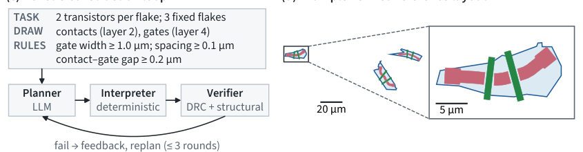
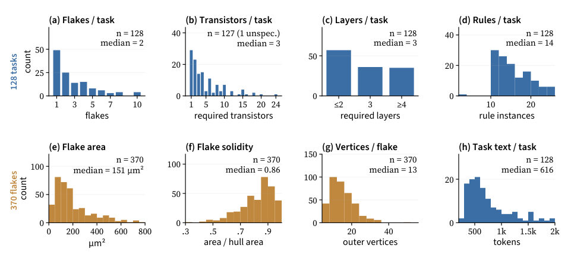
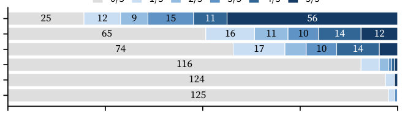
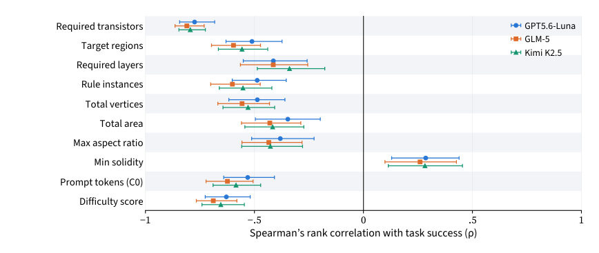
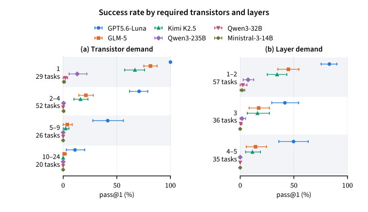
Summary. This paper presents 2D-FET-Bench V2, a novel benchmark designed to test if large language model agents can automatically design functional Field-Effect Transistors on irregularly shaped 2D material flakes. By requiring agents to translate textual specifications into precise geometric layout files, the work pushes the frontier of AI-driven microelectronic design automation.
Why it may be interesting. While not directly about quantum physics, the rigorous testing of AI agents on complex, constrained geometric design tasks (like semiconductor layout) represents a significant advancement in applying AI to materials science engineering problems.
Main problem. The paper introduces an executable benchmark to test the ability of language-model agents to reliably perform complex, flake-specific Field-Effect Transistor (FET) layout construction on 2D materials.
Main result. The best-performing agent configuration (GPT5.6-Luna with ReAct-3) achieved 80.5% task coverage, demonstrating that AI can tackle the geometric and structural challenges of device design.
Method. The authors developed 2D-FET-Bench V2, a benchmark of 128 tasks requiring agents to translate textual device specifications into precise GDSII polygon and path operations.
Model / system. The physical system involves designing FETs on exfoliated 2D flakes (like graphene or MoSe2), where the contacts and gates must conform precisely to the irregular, microscopy-derived contours of the substrate.
Key observables. Task success rate (pass@k), task coverage, consistency across multiple attempts, and adherence to geometric/structural design rules (DRC).
Important parameters / regimes. The benchmark tasks vary in complexity, involving between 1 and 10 flakes and 1 to 24 required transistors.
Assumptions / limitations. The benchmark tests spatial reasoning from specification to geometry, independent of direct optical image perception, and success requires passing multiple deterministic checks (DRC, structural integrity, input preservation).
Figures summary. Figures illustrate the benchmark construction process, showing input flake contours, the agent's construction loop, and examples of verified reference layouts.
Paper structure. The paper introduces the problem, details the 2D-FET-Bench V2 dataset (128 tasks), describes the agent workflow (textual spec -> polygon ops -> GDSII), and presents quantitative results comparing various LLM configurations.
Field-effect transistor (FET) layouts on exfoliated two-dimensional flakes are typically drawn by hand for each flake, placing contacts and gates to match its position and outline in optical micrographs. To our knowledge, no executable benchmark tests whether language-model agents can perform this flake-specific construction reliably. We introduce 2D-FET-Bench V2, a benchmark of 128 layout tasks built from microscopy-derived flake contours, including hole-containing flakes and multi-flake tasks. Each task supplies a textual device specification and contour coordinates. An agent generates typed polygon and path operations rendered to GDSII. A deterministic verifier checks geometric and structural requirements, and a separate integrity check verifies that the supplied contours remain unchanged. Scripted reference layouts pass all 128 tasks, showing that every task is solvable. We evaluate six models and seven workflow and scaffold variants of GPT5.6-Luna, with five attempts per task. The best-performing configuration in the six-model panel, GPT5.6-Luna with ReAct-3, passes 62.3% of attempts and solves 80.5% of tasks at least once (coverage) and 43.8% in all five attempts (consistency). ReAct-3 exceeds the one-pass Plan-and-Execute by 27.0 pass@1 points at 2.46 times the tokens. An expert audit of one sampled verifier-passing layout per covered task, across five ReAct-3 configurations, accepts 56.4% to 63.5% of them. The benchmark evaluates geometric and structural FET layout construction.
Authors: Roman Makarevych, Igor Dmytruk, Yevhen Hrabovskyi, Iryna Pundyk, Nataliia Bashmakova, Nataliya Berezovska
Type: theory · Category: other · PDF: https://arxiv.org/pdf/2610.08380v1
Analysis basis: full PDF text, analyzed in chunks
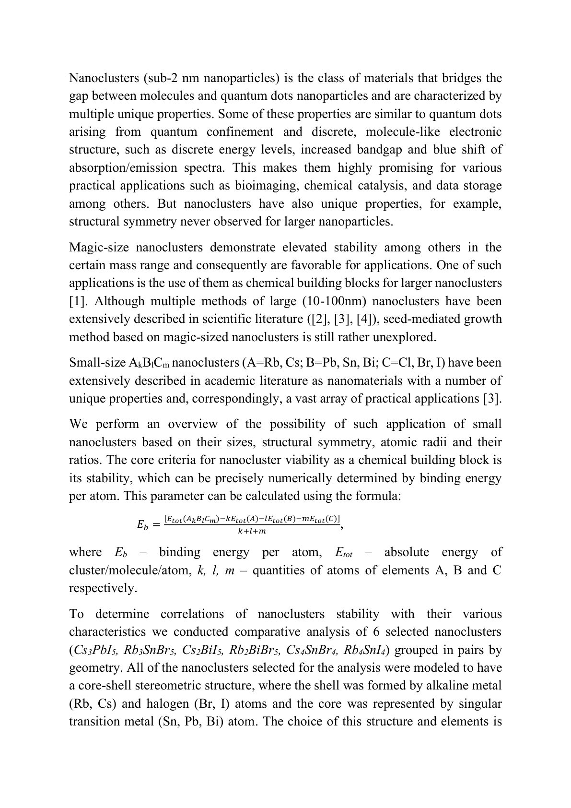
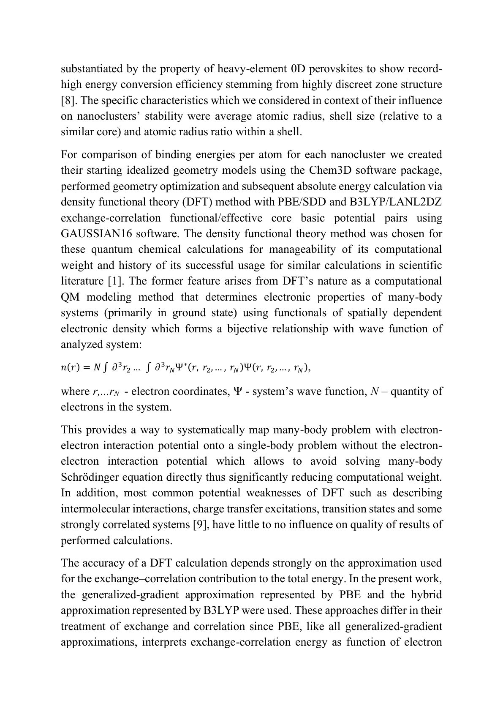
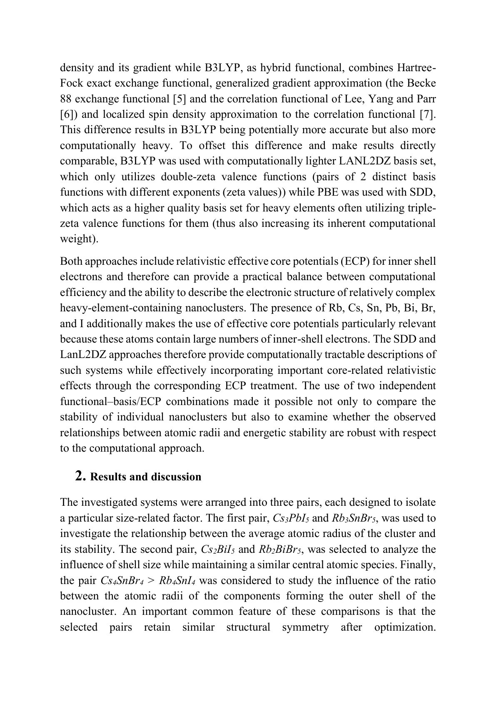
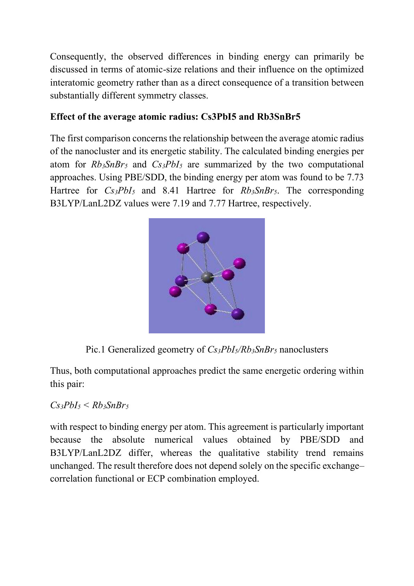
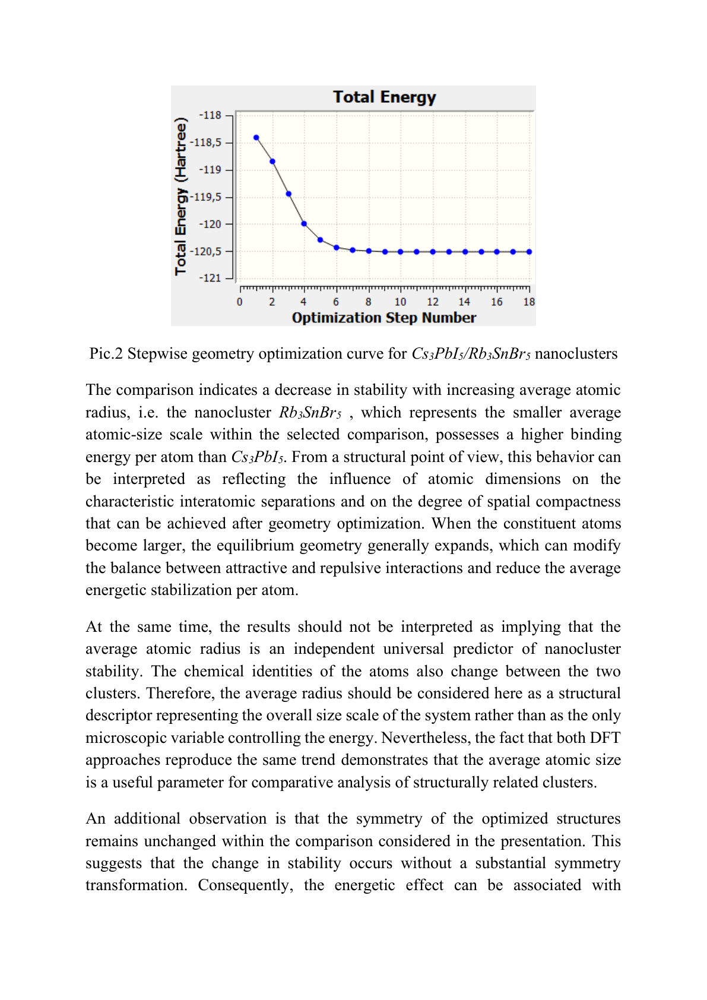
Summary. This paper computationally investigates the structural symmetry and stability of small $ ext{A}_k ext{B}_l ext{C}_m$ nanoclusters using DFT. By comparing multiple cluster types, the authors establish that energetic stability is governed by the relative sizes and ratios of the constituent atoms, rather than just the absolute structural symmetry. This provides a predictive framework for designing larger, stable nanostructure building blocks.
Why it may be interesting. While the topic is solid-state chemistry, the rigorous use of computational methods (DFT, basis sets) to establish quantitative relationships between structural descriptors (radii ratios) and energetic stability is methodologically relevant for any field relying on first-principles material prediction.
Main problem. The study aims to determine the structural symmetry and energetic stability criteria for small AkBlCm nanoclusters to assess their viability as building blocks for synthesizing larger nanoclusters.
Main result. Energetic stability is controlled by interconnected geometrical parameters, such as the average atomic radius and the relative size matching of the constituent shells, rather than solely by structural symmetry.
Method. The research employs quantum-chemical calculations using Density Functional Theory (DFT) with two different functional/basis set combinations (PBE/SDD and B3LYP/LANL2DZ) to optimize geometries and calculate binding energies.
Model / system. The system under investigation consists of ternary compound nanoclusters of the form $ ext{A}_k ext{B}_l ext{C}_m$, where A={Rb, Cs}, B={Pb, Sn, Bi}, and C={Cl, Br, I}. These clusters are modeled using a core-shell stereometric structure.
Key observables. Binding energy per atom ($ ext{E}_b$), structural symmetry, average atomic radius, and shell size/atomic-radius ratios.
Important parameters / regimes. The stability trends are observed across comparisons like $ ext{Cs}_3 ext{PbI}_5$ vs $ ext{Rb}_3 ext{SnBr}_5$, suggesting stability decreases with increasing average atomic radius.
Assumptions / limitations. The analysis relies on the assumption that the structural trends observed are robust across different computational protocols (PBE/SDD vs B3LYP/LANL2DZ) and that the clusters are derived from heavy-element 0D perovskite properties.
Figures summary. Figures illustrate the generalized geometries and stepwise geometry optimization curves for comparative clusters such as $ ext{Cs}_3 ext{PbI}_5/ ext{Rb}_3 ext{SnBr}_5$ and $ ext{Cs}_2 ext{BiI}_5/ ext{Rb}_2 ext{BiBr}_5$.
Paper structure. The paper systematically analyzes the structural symmetry and binding energies of various $ ext{A}_k ext{B}_l ext{C}_m$ nanoclusters, comparing results derived from two independent DFT methodologies to establish general rules governing stability based on atomic size ratios.
In this report we analyze charasteristics of structural symmetry of small AkBlCm nanoclusters (A - Rb, Cs; B - Pb, Sn, Bi; C - Cl, Br, I), binding energies, stability, and, ultimately, applicability as building blocks for construction of larger-size nanoclusters. Preliminary spatial modeling of ternary compound nanoclusters has been carried out on the basics of geometrical approach, namely interatomic distances taken as a sums of corresponding ionic radii. The geometry optimization and binding energies of the modeled structures have been determined through quantum-chemical calculations. Geometry optimization has been performed with Gaussian09 software package using Density Functional Theory (DFT) within the generalized gradient approximation of the Perdew-Burke-Ernzerhof (PBE) and hybrid approximation of the Becke-3-Lee-Yang-Parr (B3LYP) exchange-correlation functionals. The Stuttgart/Dresden (SDD) and Los Alamos National Laboratory 2 Double Zeta (LANL2DZ) scalar-relativistic effective basic potentials were employed throughout the calculations. As a result of these calculations, a clear relationship between the atomic radii, their ratios within the nanoclusters and their stability has been obtained and analyzed.
Authors: Ken Uchino, Yuuki Ogawa, Satoru Hayami
Type: theory · Category: other · PDF: https://arxiv.org/pdf/2610.07801v1
Analysis basis: full PDF text, analyzed in chunks
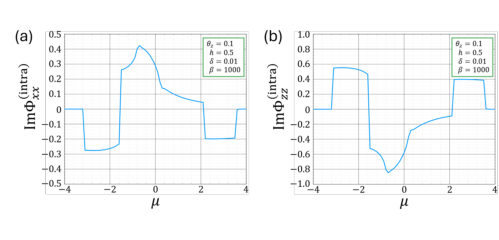
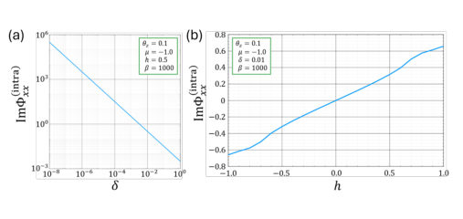
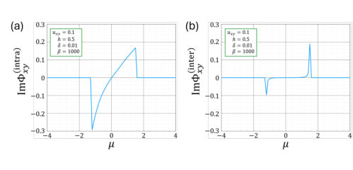
Summary. This theoretical work investigates how lattice deformations affect electronic properties in a ferroaxial material using a tight-binding model. By treating symmetric strain and antisymmetric local rotation separately, the authors show that the local rotation activates a unique, ferroaxial-order-dependent electronic response channel. This confirms that the antisymmetric rotation provides a distinct physical signature of the ferroaxial state.
Why it may be interesting. The clear separation of response channels based on symmetry breaking (ferroaxial order) provides a powerful diagnostic tool for characterizing exotic electronic states, which is relevant for understanding emergent symmetries in condensed matter systems.
Main problem. The study aims to theoretically distinguish the electronic responses induced by two distinct components of lattice deformation: the conventional symmetric strain and the antisymmetric local lattice rotation, particularly in a ferroaxial material.
Main result. The local rotation induces a distinct diagonal electric quadrupole response that is linear in the ferroaxial crystal field and vanishes when the ferroaxial order is absent, unlike the symmetric strain response.
Method. The authors employed linear response theory applied to a tight-binding model to calculate the low-frequency dynamical electric-quadrupole susceptibility ($\Phi_\gamma$).
Model / system. The system is a ferroaxial material modeled using a four-orbital tight-binding Hamiltonian on a 2D square lattice. The analysis treats the symmetric strain ($u_{xy}$) and the antisymmetric local rotation ($ heta_z$) as independent perturbations.
Key observables. Dynamical electric quadrupole moments ($\Phi_\gamma$), specifically comparing responses induced by $u_{xy}$ versus $ heta_z$.
Important parameters / regimes. The ferroaxial crystal field strength ($h$), which controls the symmetry breaking from $D_{4h}$ to $C_{4h}$.
Assumptions / limitations. The analysis is restricted to terms linear in the displacement gradient, and the response is decomposed into intraband and interband contributions.
Figures summary. Figure 2 shows the $\Phi_{xx}$ response dependence on broadening and the ferroaxial field $h$, exhibiting a linear increase with $h$. Figure 3 illustrates the $ ext{Im}[\Phi_{xy}]$ dependence on chemical potential for the strain-induced response.
Paper structure. The paper establishes the theoretical framework using a tight-binding model and linear response theory. It then analyzes the coupling of the two deformation components ($u_{xy}$ and $ heta_z$) to the electronic quadrupole moments, culminating in a comparison of their symmetry requirements and physical dependencies on the ferroaxial order parameter.
We theoretically investigate electronic responses to lattice deformation in a ferroaxial system using a tight-binding model on a two-dimensional square lattice and linear response theory. While conventional elastic responses are commonly discussed in terms of symmetric strain, the displacement gradient also contains an antisymmetric component describing a local lattice rotation. Focusing on this rotational degree of freedom, we treat the symmetric strain and antisymmetric local rotation as independent perturbations and incorporate their effects microscopically through deformation-induced modulations of the electronic hopping amplitudes. We find that the local rotation induces characteristic diagonal electric quadrupoles that are distinct from those generated by the symmetric shear strain. The rotation-induced response is dominated by the intraband contribution and increases approximately linearly with the ferroaxial crystal field, vanishing in the absence of ferroaxial order. In contrast, the symmetric-shear-induced response remains finite without ferroaxial order and contains both intraband and interband contributions. These results demonstrate that the antisymmetric local rotation provides a distinct electronic response channel characteristic of the ferroaxial state.
Authors: Yasinthara Wadumesthri, Nalaka Kapuruge, Raphael B. de Oliveira, Bruno Ipaves, Guilherme S. L. Fabris, Kinga Lasek, Florence A. Nugera, Jianjun Pan, Xiaomei Jiang, Douglas S. Galvão, Humberto Rodríguez Gutiérrez
Type: both · Category: other · PDF: https://arxiv.org/pdf/2610.08494v1
Analysis basis: full PDF text, analyzed in chunks
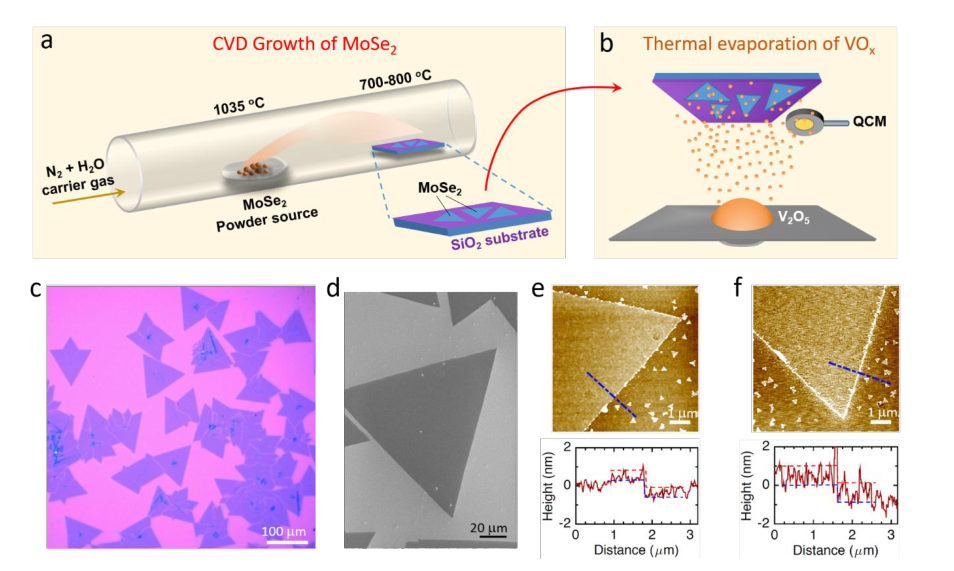
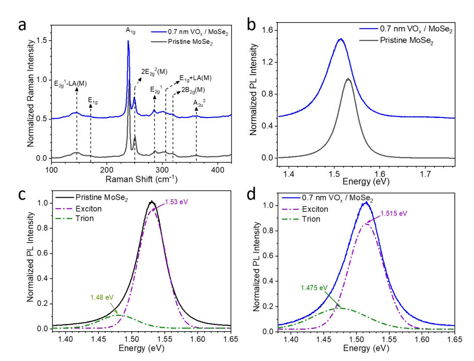
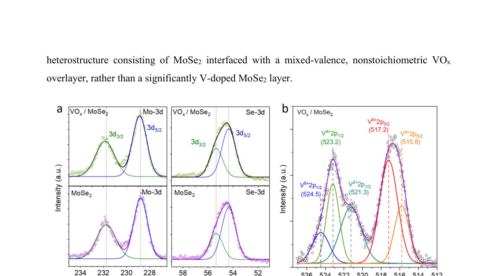
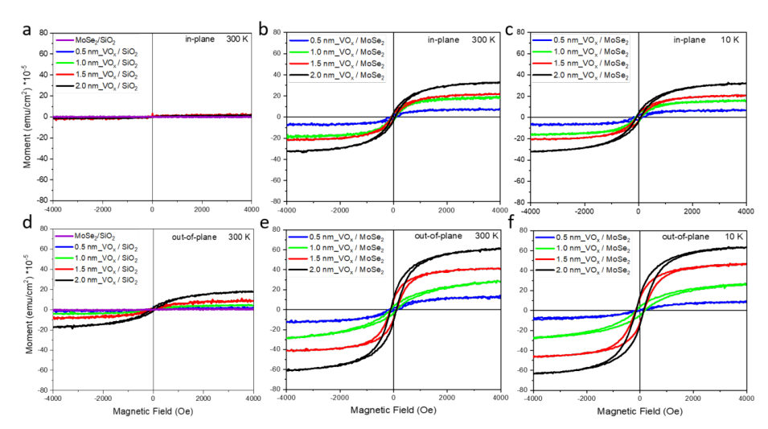
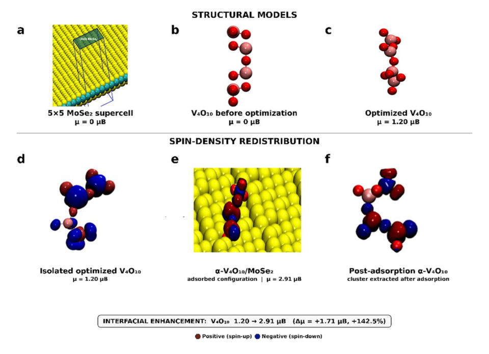
Summary. This work investigates how magnetism can be controlled in VOx/MoSe2 heterostructures by engineering the interface. The authors show that charge transfer from MoSe2 enhances the local magnetic moments of the oxide, while the physical morphology of the oxide layer controls the overall collective magnetic response. This establishes a dual control mechanism for designing next-generation 2D spintronic devices.
Why it may be interesting. The study provides a clear mechanism—interfacial charge transfer—to tune magnetism in 2D materials, which is highly relevant for designing novel spintronic and optoelectronic devices based on quantum materials.
Main problem. The study aims to engineer magnetism in 2D semiconductors by utilizing interfacial interactions, offering an alternative to traditional substitutional doping methods.
Main result. The magnetic response is governed by two factors: interfacial charge transfer enhances local magnetic moments in the oxide, while the oxide's morphology dictates the collective magnetic dynamics (e.g., conventional vs. unusual temperature dependence).
Method. The research combines experimental characterization (structural, spectroscopic, magnetic measurements) with first-principles theoretical calculations (DFT+U).
Model / system. The physical system is the ultrathin VOx/MoSe2 heterostructure. The analysis models the magnetic behavior using both finite-cluster approximations and phenomenological models describing the collective dynamics based on oxide morphology.
Key observables. Magnetic moment enhancement, temperature dependence of magnetization ($M_s$) and coercivity ($H_c$), trion contribution in photoluminescence (PL), and charge transfer evidence from PL spectroscopy.
Important parameters / regimes. Oxide morphology (discontinuous clusters vs. continuous films), interfacial charge transfer magnitude, and temperature ($T$).
Assumptions / limitations. The analysis distinguishes between the magnetic behavior of isolated VOx clusters and those forming continuous films. The use of QCM values for thickness is noted despite potential AFM discrepancies.
Figures summary. Figures show $ ext{MoSe}_2$ growth and $ ext{VO}_x$ deposition morphology (AFM/SEM). Spectroscopy (Raman/PL) confirms electronic changes, and VSM measures the magnetic hysteresis and temperature dependence, which are modeled theoretically.
Paper structure. The paper systematically presents evidence: first, demonstrating interfacial charge transfer via PL/DFT; second, analyzing the magnetic enhancement due to this charge transfer; and finally, establishing that the collective magnetic response is dictated by the oxide's morphology, leading to a unified model.
Engineering magnetism in two-dimensional semiconductors through interfacial interactions offers an attractive alternative to substitutional doping and provides opportunities for integrating magnetic and optoelectronic functionality within the same heterostructure. Here, we investigate ultrathin VOx films deposited on monolayer MoSe2 and demonstrate a pronounced enhancement of the magnetic response upon formation of the VOx/MoSe2 interface. Combined structural, spectroscopic, magnetic, and first-principles analyses support a consistent picture in which finite VOx clusters possess intrinsic magnetic moments that are further enhanced by electron transfer from MoSe2 to the oxide. The predicted charge transfer is also consistent with the increased trion contribution observed in the photoluminescence response of the heterostructure. Beyond this interfacial enhancement, the magnetic behavior is strongly governed by the morphology of the ultrathin oxide. A crossover from discontinuous clusters to more continuous films produces qualitatively different temperature dependences: the continuous-film regime exhibits conventional thermal demagnetization and coercive softening, whereas the clustered regime displays an unusual increase in magnetization and nonmonotonic coercivity with increasing temperature. These contrasting responses are captured by a phenomenological model in which morphology determines the collective magnetic dynamics through a distribution of effective reversal barriers and their thermally activated accessibility. Together, the results establish a unified picture in which interfacial charge transfer enhances the local magnetic moments of VOx, while nanoscale morphology governs their collective magnetic dynamics, providing complementary routes for controlling magnetism in oxide/transition-metal dichalcogenide heterostructures.